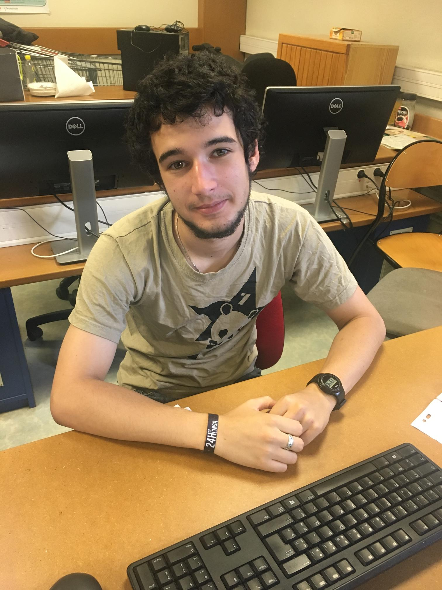

Nous avons effectué ce projet dans le cadre de l'enseignement "Projet 3BIM" dispensé par Nicolas Parisot pour la filère Bio-Informatique et Modélisation (BIM) du département Biosciences de l'INSA de Lyon.
|  | |||
Tuteur : Brice DENOUN |
Olivia BRUNET |
Baptiste DEMURGER |
Nathan GAUTHIER |
|
5-BIM |
3-BIM |
3-BIM |
3-BIM |
|
brice.denoun@insa-lyon.fr |
olivia.brunet@insa-lyon.fr |
baptiste.demurger@insa-lyon.fr |
nathan.gauthier@insa-lyon.fr |